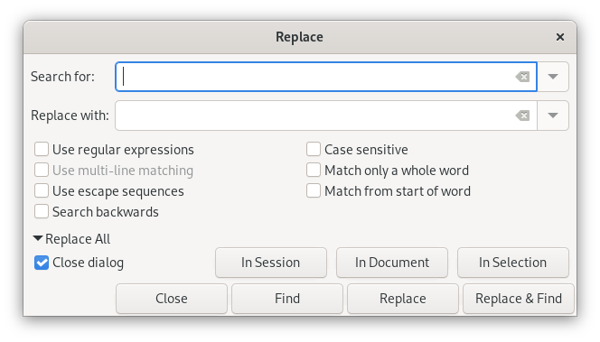
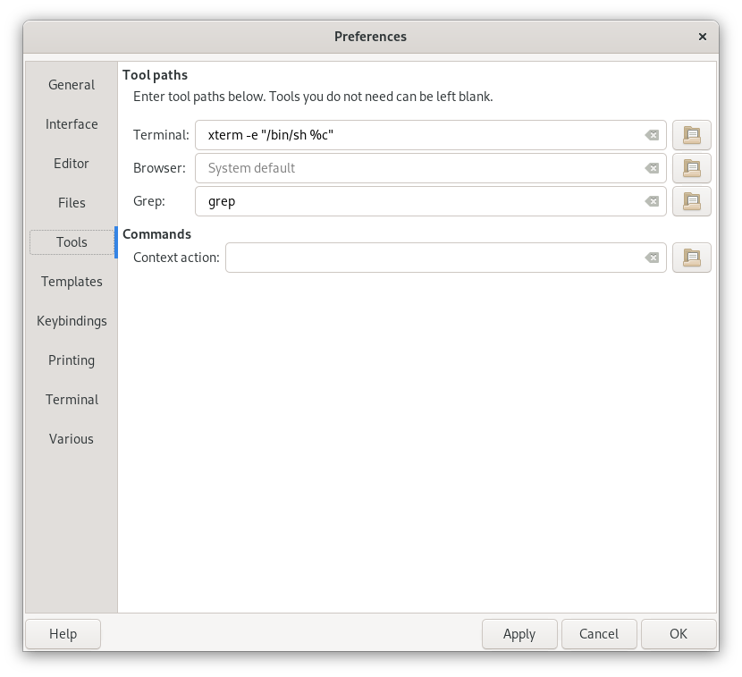
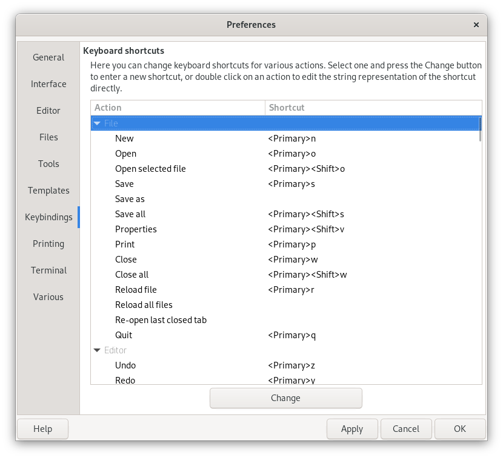
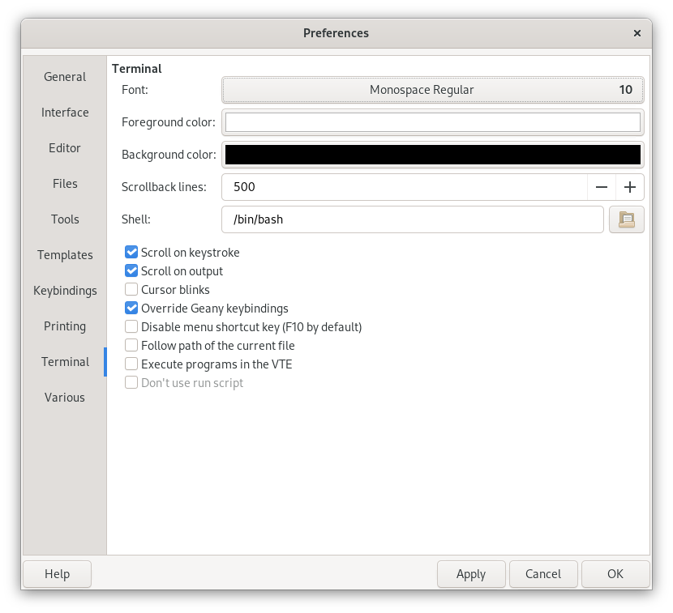

Geany
A fast, light, GTK+ IDE
| Authors: | Enrico Tröger
Nick Treleaven Frank Lanitz |
|---|---|
| Date: | 2008-09-17 |
| Version: | 0.15 |
Copyright © 2005-2008
This document is distributed under the terms of the GNU General Public License as published by the Free Software Foundation; either version 2 of the License, or (at your option) any later version. A copy of this license can be found in the file COPYING included with the source code of this program, and also in the chapter GNU General Public License.
- Introduction
- Installation
- Usage
- Getting started
- Command line options
- General
- Documents
- Character sets and Unicode Byte-Order-Mark (BOM)
- Editing
- Search, replace and go to
- Tags
- Preferences
- General tab in preferences dialog
- Interface tab in preferences dialog
- Toolbar tab in preferences dialog
- Editor Features tab in preferences dialog
- Editor Completions tab in preferences dialog
- Editor Display tab in preferences dialog
- Files tab in preferences dialog
- Tools tab in preferences dialog
- Template tab in preferences dialog
- Keybinding tab in preferences dialog
- Printing tab in preferences dialog
- VTE tab in preferences dialog
- Project Management
- Build system
- Printing support
- Plugins
- Keybindings
- Configuration files
- Contributing to this document
- Scintilla keyboard commands
- Tips and tricks
- Hidden preferences
- Compile-time options
- GNU General Public License
- License for Scintilla and SciTE
Introduction
About Geany
Geany is a small and lightweight Integrated Development Environment. It was developed to provide a small and fast IDE, which has only a few dependencies from other packages. Another goal was to be as independent as possible from a special Desktop Environment like KDE or GNOME - Geany only requires the GTK2 runtime libraries.
Some basic features of Geany:
- Syntax highlighting
- Code folding
- Symbol name auto-completion
- Construct completion/snippets
- Auto-closing of XML and HTML tags
- Call tips
- Many supported filetypes including C, Java, PHP, HTML, Python, Perl, Pascal, and others
- Symbol lists
- Code navigation
- Build system to compile and execute your code
- Simple project management
- Plugin interface
Where to get it
You can obtain Geany from http://www.geany.org/ or perhaps also from your distributor. For a list of available packages, please see http://www.geany.org/Download/ThirdPartyPackages.
License
Geany is distributed under the terms of the GNU General Public License as published by the Free Software Foundation; either version 2 of the License, or (at your option) any later version. A copy of this license can be found in the file COPYING included with the source code of this program and in the chapter, GNU General Public License.
The included Scintilla library (found in the subdirectory scintilla/) has its own license, which can be found in the chapter, License for Scintilla and SciTE.
About this document
This documentation is available in HTML and text formats. The latest version can always be found at http://www.geany.org/.
If you want to contribute to it, see Contributing to this document.
Installation
Requirements
You will need the GTK (>= 2.6.0) libraries and their dependencies (Pango, GLib and ATK). Your distro should provide packages for these, usually installed by default. For Windows, you can download an installer which bundles these libraries from the website.
Binary packages
There are many binary packages available. For an up-to-date but maybe incomplete list see http://www.geany.org/Download/ThirdPartyPackages.
Source compilation
For compiling Geany yourself, you will need the GTK (>= 2.6.0) libraries and header files. You will also need the Pango, GLib and ATK libraries and header files. All these files are available at http://www.gtk.org, but very often your distro will provide development packages to save the trouble of building these yourself.
Furthermore you need, of course, a C compiler and the Make tool; a C++ compiler is also required (for the included Scintilla library). The GNU versions of these tools are recommended.
Compiling Geany is quite easy. The following should do it:
$ ./configure $ make
Then as root:
% make install
Custom installation
The configure script supports several common options, for a detailed list, type:
$ ./configure --help
You may also want to read the INSTALL file for advanced installation options.
- See also Compile-time options.
Dynamic linking loader support
In the case that your system lacks dynamic linking loader support, you probably want to pass the option --disable-vte to the configure script. This prevents compiling Geany with dynamic linking loader support to automatically load libvte.so.4 if available.
Build problems
If there are any errors during compilation, check your build environment and try to find the error, otherwise contact the mailing list or one the authors. Sometimes you might need to ask for specific help from your distro.
Usage
Getting started
You can start Geany in the following ways:
From the Desktop Environment menu:
Choose in your application menu of your used Desktop Environment: Development --> Geany.
From the command line:
To start Geany from a command line, type the following and press Return:
% geany
Command line options
| Short option | Long option | Function |
|---|---|---|
| none | +number | Set initial line number for the first opened file (same as --line, do not put a space between the + sign and the number). E.g. "geany +7 foo.bar" will open the file foo.bar and place the cursor in line 7. |
| none | --column | Set initial column number for the first opened file. |
| -c dir_name | --config=directory_name | Use an alternate configuration directory. Default configuration directory is ~/.geany/ and there resides geany.conf and other configuration files. |
| -d | --debug | Run Geany in debug mode, which means being verbose and printing lots of information. |
| none | --ft-names | Print a list of Geany's internal filetype names (useful for snippets configuration). |
| -g | --generate-tags | Generate a global tags file (see Generating a global tags file). |
| -P | --no-preprocessing | Don't preprocess C/C++ files when generating tags. |
| -i | --new-instance | Do not open files in a running instance, force opening a new instance. Only available if Geany was compiled with support for Sockets. |
| -l | --line | Set initial line number for the first opened file. |
| -m | --no-msgwin | Do not show the message window. Use this option if you do not need compiler messages or VTE support. |
| -n | --no-ctags | Do not load symbol completion and call tip data. Use this option if you do not want to use them. |
| -p | --no-plugins | Do not load plugins or plugin support. |
| none | --print-prefix | Print installation prefix, the data directory, the lib directory and the locale directory (in this order) to stdout, each per line. This is mainly intended for plugin authors to detect installation paths. |
| -s | --no-session | Do not load the previous session's files. |
| -t | --no-terminal | Do not load terminal support. Use this option if you do not want to load the virtual terminal emulator widget at startup. If you do not have libvte.so.4 installed, then terminal-support is automatically disabled. Only available if Geany was compiled with support for VTE. |
| none | --vte-lib | Specify explicitly the path including filename or only the filename to the VTE library, e.g. /usr/lib/libvte.so or libvte.so. This option is only needed when the autodetection does not work. Only available if Geany was compiled with support for VTE. |
| -v | --version | Show version information and exit. |
| -? | --help | Show help information and exit. |
| none | [files ...] | Open all given files at startup. This option causes Geany to ignore loading stored files from the last session (if enabled). Geany also recognises line and column information when appended to the filename with colons, e.g. "geany foo.bar:10:5" will open the file foo.bar and place the cursor in line 10 at column 5. Projects can also be opened but a project file (*.geany) must be the first non-option argument. All additionally given files are ignored. |
Geany supports all generic GTK options, a list is available on the help screen.
General
Startup
At startup, Geany loads all files from the last time Geany was launched. You can disable this feature in the preferences dialog (see General tab in preferences dialog). If you specify some files on the command line, only these files will be opened, but you can find the files from the last session in the file menu under the "Recent files" item. By default this contains the last 10 recently opened files. You can change the amount of recently opened files in the preferences dialog.
You can start several instances of Geany, but only the first will load files from the last session. To run a second instance of Geany, do not specify any filenames on the command-line, or disable opening files in a running instance using the appropriate command line option.
Opening files from the command-line in a running instance
Geany detects an already running instance of itself and opens files from the command-line in the already running instance. So, Geany can be used to view and edit files by opening them from other programs such as a file manager. If you do not like this for some reason, you can disable using the first instance by using the appropriate command line option -- see the section called Command line options.
Virtual terminal emulator widget (VTE)
If you have installed libvte.so in your system, it is loaded automatically by Geany, and you will have a terminal widget in the notebook at the bottom.
If Geany cannot find any libvte.so at startup, the terminal widget will not be loaded. So there is no need to install the package containing this file in order to run Geany. Additionally, you can disable the use of the terminal widget by command line option, for more information see the section called Command line options.
You can use this terminal (from now on called VTE) nearly as an usual terminal program like xterm. There is basic clipboard support. You can paste the contents of the clipboard by pressing the right mouse button to open the popup menu and choosing Paste. To copy text from the VTE, just select the desired text and then press the right mouse button and choose Copy from the popup menu. On systems running the X Window System you can paste the last selected text by pressing the middle mouse button in the VTE (on 2-button mice, the middle button can often be simulated by pressing both mouse buttons together).
In the preferences dialog you can specify a shell which should be started in the VTE. To make the specified shell a login shell just use the appropriate command line options for the shell. These options should be found in the manual page of the shell. For zsh and bash you can use the argument --login.
Note
Geany tries to load libvte.so. If this fails, it tries to load some other filenames. If this fails too, you should check whether you installed libvte correctly. Again, Geany also runs without this library.
It could be, that the library is called something else than libvte.so (e.g. on FreeBSD 6.0 it is called libvte.so.8). So please set a link to the correct file (as root):
# ln -s /usr/lib/libvte.so.X /usr/lib/libvte.so
Obviously, you have to adjust the paths and set X to the number of your libvte.so.
You can also specify the filename of the VTE library to use on the command line (see the section called Command line options) or at compile time by specifying the command line option --with-vte-module-path to ./configure.
Defining own widget styles using .gtkrc-2.0
You can define your widget style for many of Geany's GUI parts. To do this, just edit your .gtkrc-2.0 (usually found in your home directory on UNIX-like systems and in the etc subdirectory of your Geany installation on Windows).
To get a defined style get noticed by Geany you must it assign to one of Geany's widgets. To do so, use the following line:
widget "Geany*" style "geany_style"
This would assign your already defined style "geany_style" to all Geany widgets. You can also assign styles only to specific widgets. At the moment you can use the following widgets:
- GeanyMainWindow
- GeanyEditMenu
- GeanyToolbarMenu
- GeanyDialog
- GeanyDialogPrefs
- GeanyDialogProject
- GeanyDialogSearch
Example of a simple .gtkrc-2.0:
style "geanyStyle"
{
font_name="Sans 12"
}
widget "GeanyMainWindow" style "geanyStyle"
style "geanyStyle"
{
font_name="Sans 10"
}
widget "GeanyPrefsDialog" style "geanyStyle"
Documents
Switching between documents
The documents list and the editor tabs are two different ways to switch between documents using the mouse. When you hit the key combination to move between tabs, the order is determined by the tab order, not alphabetical as shown in the documents list (regardless of whether or not editor tabs are visible).
Character sets and Unicode Byte-Order-Mark (BOM)
Using character sets
Geany provides support for detecting and converting character sets. So you can open and save files in different character sets and even can convert a file from a character set to another one. To do this, Geany uses the character conversion capabilities of the GLib.
Only text files are supported, i.e. opening files which contain NUL-bytes may fail. Geany will try to open the file anyway but it is likely that the file will be truncated because it can only opened up to the first occurrence of a NUL-byte. All characters after this position are lost and are not written when you save the file.
Geany tries to detect the encoding of a file while opening it. It might be that the encoding of a file cannot be detected correctly so you have to set manually the encoding of the file in order to display it correctly. You can this in the file open dialog by selecting an encoding in the drop down box or by reloading the file with the file menu item "Reload as". The auto-detection works well for most encodings but there are also some encodings known where auto-detection has its problems. Auto detecting the encoding of a file is not easy and sometimes an encoding might be detected not correctly.
There are different ways to use different encodings in Geany:
Using the file open dialog
This opens the file with the encoding specified in the encoding drop down box. If the encoding is set to "Detect from file" auto-detection will be used. If the encoding is set to "Without encoding (None)" the file will be opened without any character conversion and Geany will not try to auto-detect the encoding (see below for more information).
Using the "Reload as" menu item
This item reloads the current file with the specified encoding. It can help if you opened a file and found out that a wrong encoding was used.
Using the "Set encoding" menu item
In contrary to the above two options, this will not change or reload the current file unless you save it. It is useful when you want to change the encoding of the file.
Specifying the encoding in the file itself
As mentioned above, auto-detecting the encoding of a file may fail on some encodings. If you know that Geany doesn't open a certain file, you can add a special line to the beginning of the file to force an encoding when opening the file (for details see below).
In-file encoding specification
Geany detects meta tags of HTML files which contain charset information like:
<meta http-equiv="content-type" content="text/html; charset=ISO-8859-15" />
and the found charset is used when opening the file. This is useful if the encoding of the file cannot be detected properly. For non-HTML files you can also define a line like:
/* geany_encoding=ISO-8859-15 */
or:
# geany_encoding=ISO-8859-15 #
to force an encoding to be used. The used #, /* and */ are only examples for filetype-specific comment characters. It doesn't matter which characters are around the string " geany_encoding=ISO-8859-15 " as long as there is at least one whitespace character before and after this string. Whitespace characters are in this case a space or tab character. An example to use this could be you have a file with ISO-8859-15 encoding but Geany constantly detects the file encoding as ISO-8859-1. Then you simply add such a line to the file and Geany will open it correctly the next time.
Since Geany 0.15 you can also use lines like:
# encoding = ISO-8859-15
or:
# coding: ISO-8859-15
The used regular expression to find the encoding string is: coding[\t ]*[:=][\t ]*([a-z0-9-]+)[\t ]*
Note
These specifications must be in the first 512 bytes of the file. Anything after the first 512 bytes will not be recognised.
Special encoding "None"
There is a special encoding "None" which is actually no real encoding. It is useful when you know that Geany cannot auto-detect the encoding of a file and it is not displayed correctly. Especially when the file contains NUL-bytes this can be useful to skip auto detection and open the file properly at least until the occurrence of the first NUL-byte. Using this encoding opens the file as it is without any character conversion.
Unicode Byte-Order-Mark (BOM)
Furthermore, Geany detects an Unicode Byte Order Mark (see http://en.wikipedia.org/wiki/Byte_Order_Mark for details). Of course, this feature is only available if the opened file is in an unicode encoding. The Byte Order Mark helps to detect the encoding of a file, e.g. whether it is UTF-16LE or UTF-16BE and so on. On Unix-like systems using a Byte Order Mark could cause some problems, e.g. the gcc stops with stray errors, PHP does not parse a script containing a BOM and script files starting with a she-bang maybe cannot be started. In the status bar you can easily see whether the file starts with a BOM or not. If you want to set a BOM for a file or if you want to remove it from a file, just use the document menu and toggle the checkbox.
Note
If you are unsure what a BOM is or if you do not understand where to use it, then it is probably not important for you and you can safely ignore it.
Editing
Folding
Geany provides basic code folding support. Folding means the ability to show and hide parts of the text in the current file. You can hide unimportant code sections and concentrate on the parts you are working on and later you can show these sections again. In the editor window there is a small grey margin on the left side with some [+] and [-] symbols. By clicking on these icons you can simply show and hide sections which are marked by vertical lines within this margin. For many filetypes nested folding is supported, so there may be several fold points within other fold points.
If you don't like it or don't need it at all, you can simply disable folding support completely in the preferences dialog.
The folding behaviour can be changed with the "Fold/Unfold all children of a fold point" option in the preference dialog. If activated, Geany will unfold all nested fold points below the current one if they are already folded (when clicking on a [+] symbol). When clicking on a [-] symbol, Geany will fold all nested fold points below the current one if they are unfolded.
The usage of this option can be instantly inverted by pressing the Shift key while clicking on a fold symbol. That means, if the "Fold/Unfold all children of a fold point" option is enabled, pressing Shift will disable it for this click and vice versa.
Column mode editing
There is basic support for column mode editing. To use it, create a rectangular selection by holding down the Control key while selecting some text. It is also possible to create a zero-column selection but be careful because there is no visual indication of this selection. Once a rectangular selection exists you can start editing the text within this selection and the modifications will be done for every line in the selection.
Drag and drop of text
If you drag selected text in the editor widget of Geany the text is moved to the position where the mouse pointer is when releasing the mouse button. Holding Control when releasing the mouse button will copy the text instead. This behaviour was changed in Geany 0.11 - before the selected text was copied to the new position.
Indentation
Geany allows each document to indent either with a tab character or multiple spaces. The default indent mode is set in the Editor Features tab in preferences dialog. But this can be overridden using either the Document->Indent Type menu, or by using the Detect from file indentation preference. When enabled, this scans each file that is opened and sets the indent mode based on how many lines start with a tab vs. 2 or more spaces.
The indent mode for the current document is shown on the status bar as follows:
- TAB
- Indent with Tab characters.
- SP
- Indent with spaces.
Auto-indentation
When enabled, auto-indentation happens when pressing Enter in the Editor. It adds a certain amount of indentation to the new line so the user doesn't always have to indent each line manually.
Geany knows four types of auto-indentation:
- None
- Disables auto-indentation completely.
- Basic
- Adds the same amount of whitespace on a new line as on the last line.
- Current chars
- Does the same as Basic but also indents a new line after an opening brace '{', and de-indents when typing a closing brace '}'. For Python, a new line will be indented after typing ':' at the end of the previous line.
- Match braces
- Similar to Current chars but the closing brace will be aligned to match the indentation of the line with the opening brace.
Bookmarks
Geany provides a handy bookmarking feature that lets you mark one or more lines in a document, and return the cursor to them using a key combination.
To place a mark on a line, either left-mouse-click in the left margin of the editor window, or else use Ctrl-m. Either way, this will produce a small green plus symbol in the margin. You can have as many marks in a document as you like. Click again (or use Ctrl-m again) to remove the bookmark. To remove all the marks in a given document, use "Remove Markers" in the Document menu.
To navigate down your document, jumping from one mark to the next, use Ctrl-. (control period). To go in the opposite direction on the page, use Ctrl-, (control comma). Using the bookmarking feature together with the commands to switch from one editor tab to another (Ctrl-PgUp/PgDn and Ctrl-Tab) provides a particularly fast way to navigate around multiple files.
Code Navigation History
To ease navigation in source files and especially between different files, Geany lets you jump between different navigation points. Currently, this works for the following:
- Go to tag declaration
- Go to tag definition
- Symbol list items
- Build errors
- Message items
When using one of these actions, Geany remembers your current position and jumps to the new one. If you decide to go back to your previous position in the file, just use "Navigate back a location". To get back to the new position again, just use "Navigate forward a location". This makes it easier to navigate in e.g. foreign code and between different files.
Send text through definable commands
You can define several custom commands in Geany and send the current selection to one of these commands. The output of the command will be used to replace the current selection. So, it is possible to use text formatting tools with Geany in a general way. The selected text will be sent to the standard input of the executed command, so the command should be able to read from it and it should print all results to its standard output which will be read by Geany. To help finding errors in executing the command, the output of the program's standard error will be printed on Geany's standard output.
To add a custom command, just go to the Set Custom Commands dialog in the Format sub menu of the Edit and Popup menu. Then click on Add to get a new text entry and type the command. You can also specify some command line options. To delete a command, just clear the text entry and press OK. It will be deleted automatically.
Context actions
You can execute a specified command on the current word near the cursor position or an available selection and this word is passed as an argument to this command. It can be used for example to open some API documentation in a browser window or open any other external program. To do this, there is an menu entry in the popup menu of the editor widget and also a keyboard shortcut(see the section called Keybindings).
The command can be specified in the preferences dialog and additionally for each filetype (see "context_action_cmd" in the section called Format). At executing, the filetype specific command is used if available otherwise the command specified in the preferences dialog is executed.
The passed word can be referred with the wildcard "%s" everywhere in the command, before executing it will be replaced by the current word. For example, the command to open the PHP API documentation would be:
firefox "http://www.php.net/%s"
when executing the command, the %s is substituted by the word near the cursor position or by the current selection. If the cursor is at the word "echo", a browser window will open(assumed your browser is called firefox) and it will open the address: http://www.php.net/echo.
User-definable snippets
Snippets are small strings or code constructs which can be replaced or completed to a more complex string. So you can save a lot of time by not typing often used strings and letting Geany do the work for you. To know what to complete or replace Geany reads a configuration file called snippets.conf at startup.
The system-wide configuration file can be found in $prefix/share/geany, where $prefix is the path where Geany is installed (commonly /usr/local). It is not recommended to edit the system-wide file, because it will be overridden when Geany is updated.
To change the settings, copy the file from $prefix/share/geany in your configuration directory (usually ~/.geany/).
For example:
% cp /usr/local/share/geany/snippets.conf /home/username/.geany/
Then you can edit the file and the changes are also available after an update of Geany because the file resides in your configuration directory. Alternatively, you can create a file ~/.geany/snippets.conf and add only these settings you want to change. All missing settings will be read from the global snippets file in $prefix/share/geany.
The file snippets.conf may contain several sections for each filetype. It also contains two additional sections "Default" and "Special". Default contains all snippets which are available for every filetype. You may define another section for a certain filetype(e.g. C++) containing the same snippets. Then when using such a snippet in a C++ file the snippet defined in the C++ section will be used. In any other file the snippet defined in the Default section will be used unless a section for the current filetype exists and the used snippet is defined in this section. The section "Special" contains special snippets which can only be used in other snippets. So you can define often used parts of snippets and just use the special snippet as a placeholder (see the snippets.conf for details).
To define snippets you can use several special characters which will be replaced when using the snippet:
Wildcards for snippets
| \n or %newline% | Insert a new line (it will be replaced by the used EOL char(s): LF, CR/LF, or CR). |
| \t or %ws% | Insert an indentation step, if using only spaces for indentation only spaces will be used. |
| \s | \s to force whitespace at beginning or end of a value ('key= value' won't work, use 'key=\svalue') |
| %cursor% | Place the cursor at this position after completion has been done. |
| %...% | "..." means the name of a key in the "Special" section. If you have defined a key "brace_open" in the "Special" section you can use %brace_open" in any other snippet. |
Defined snippets must not contain spaces otherwise they won't work correctly. But beside that you can define almost everything string as a snippet and use it later in Geany. It is not limited to existing contructs of certain programming languages(like if, for, switch). Define whatever you need.
Maybe you need to often type your name, so define a snippet like this:
[Default] myname=Enrico Tröger
Everytime you write myname <TAB> in Geany, it will replace "myname" with "Enrico Tröger". The key to start auto completion can be changed in the preferences dialog, by default it is TAB.
Since Geany 0.15 you can also use most of the available templates wildcards listed in Template wildcards. All wildcards which are listed as available in snippets can be used. For instance to improve the above example:
[Default]
myname=My name is {developer}
this will replace myname with "My name is " and the value of the template preference developer.
You may change the behaviour Geany recognizes the word to complete, i.e. where define the start and end of a word. The section "Special" may contain a key "wordchars" which lists all characters a string may contain to be recognized as a word for completion. Leave it commented to use default characters or define it to add or remove characters to fit your needs.
Inserting unicode characters
With GTK 2.10 and above, you can hit Ctrl-Shift-u, then still holding Ctrl-Shift, type some hex digits representing the code point for the character you want, then let go of Ctrl-Shift and hit a key such as the right arrow.
For this to work in Geany, you'll need to first unbind Ctrl-Shift-u in the keybinding tab in preferences dialog, then restart Geany. Note that it works slightly differently from other GTK applications, in that you'll need to continue to hold down the Ctrl and Shift keys while typing the code point hex digits.
For GTK < 2.10, it is also possible, but typing the first Ctrl-Shift-u is not necessary. One problem is that you may find the alphabetic keys conflict with other Geany keybindings.
Search, replace and go to
This section describes search-related commands from the Search menu and the editor window's popup menu:
- Find
- Find usage *
- Find in files
- Replace
- Go to tag definition *
- Go to tag declaration *
- Go to line
* These items are available from the editor window's popup menu, or by using a keyboard shortcut (see the section called Keybindings).
Find
The Find dialog is used for finding text in one or more open documents.

Matching options
The syntax for the Use regular expressions option is shown in Regular expressions.
The Use escape sequences option will transform any escaped characters into their UTF-8 equivalent. For example, \t will be transformed into a tab character. Other recognised symbols are: \\, \n, \r, \uXXXX (Unicode chararacters).
Find all
To find all matches, click on the Find All expander. This will reveal several options:
- In Document
- In Session
- Mark
Find All In Document will show a list of matching lines in the current document in the Messages tab of the Message Window. Find All In Session does the same for all open documents.
Mark will set markers for all matching lines in the current document, if the Markers margin is visible. If not, the background colour of matching lines will be highlighted. Markers and highlighting can be removed by selecting the Remove Markers command from the Document menu.
Change font in search dialog text fields
All search related dialogs use a Monospace for the text input fields to increase the readibility of input text. This is useful when you are typing e.g. regular expressions with spaces, periods and commas which might it hard to read with a proportional font.
If you want to change the font for some reason, you can do this easily by inserting the following style into your .gtkrc-2.0 (usually found in your home directory on UNIX-like systems and in the etc subdirectory of your Geany installation on Windows):
style "search_style"
{
font_name="Monospace 8"
}
widget "GeanyDialogSearch.*.GtkEntry" style:highest "search_style"
Please note the addition ":highest" in the last line which sets the priority of this style to the highest available. Otherwise, the style is ignored for the search dialogs.
Find usage
Find usage searches all open files. It is similar to the Find All In Session Find dialog command.
If there is a selection, then it is used as the search text; otherwise the current word is used. The current word is either taken from the word nearest the edit cursor, or the word underneath the popup menu click position when the popup menu is used. The search results are shown in the Messages tab of the Message Window.
Find in files
Find in files is a more powerful version of Find usage that searches all files in a certain directory using the Grep tool. The Grep tool must be correctly set in Preferences to the path of the system's Grep utility. GNU Grep is recommended.

The Extra options field is used to pass any additional arguments to the grep tool.
Filtering out version control files
When using the Recurse in subfolders option with a directory that's under version control, you can set the Extra options field to use grep's --exclude flag to filter out filenames.
SVN Example: --exclude=*.svn-base
The --exclude argument only matches the file name part, not the path. If you have GNU Grep >= 2.5.2 you can use the --exclude-dir argument to filter out CVS and hidden directories like .svn.
Example: --exclude-dir=.* --exclude-dir=CVS
Replace
The Replace dialog is used for replacing text in one or more open documents.
The Replace dialog has the same options for matching text as the Find dialog. See the section called Matching options.
The Use regular expressions option applies both to the search string and to the replacement text; for the latter back references can be used -- see the entry for '\n' in Regular expressions.
Replace all
To replace several matches, click on the Replace All expander. This will reveal several options:
- In Document
- In Session
- In Selection
Replace All In Document will replace all matching text in the current document. Replace All In Session does the same for all open documents. Replace All In Selection will replace all matching text in the current selection of the current document.
Go to tag definition
If the current word is the name of a tag definition (like a function body) and the file containing the tag definition is open, this command will switch to that file and go to the corresponding line number. The current word is either taken from the word nearest the edit cursor, or the word underneath the popup menu click position when the popup menu is used.
Go to tag declaration
Like Go to tag definition, but for a forward declaration such as a function prototype or extern declaration instead of a function body.
Go to line
Go to a particular line number in the current file.
Regular expressions
You can use regular expressions in the Find and Replace dialogs by selecting the Use regular expressions check box. The syntax is POSIX-like, as described in the table below.
Note
- Searching backwards with regular expressions is not supported.
- \r and \n are never matched because regular expression searches are made line per line (stripped of end-of-line chars).
In a regular expression, the following characters are interpreted:
| . | Matches any character. |
| ( | This marks the start of a region for tagging a match. |
| ) | This marks the end of a tagged region. |
| \n | Where n is 1 through 9 refers to the first through ninth tagged region when replacing. For example, if the search string was Fred([1-9])XXX and the replace string was Sam\1YYY, when applied to Fred2XXX this would generate Sam2YYY. |
| \< | This matches the start of a word. |
| \> | This matches the end of a word. |
| \x | This allows you to use a character x that would otherwise have a special meaning. For example, \[ would be interpreted as [ and not as the start of a character set. Use \\ for a literal backslash. |
| [...] | This indicates a set of characters, for example, [abc] means any of the characters a, b or c. You can also use ranges, for example [a-z] for any lower case character. |
| [^...] | The complement of the characters in the set. For example, [^A-Za-z] means any character except an alphabetic character. |
| ^ | This matches the start of a line (unless used inside a set, see above). |
| $ | This matches the end of a line. |
| * | This matches 0 or more times. For example, Sa*m matches Sm, Sam, Saam, Saaam and so on. |
| + | This matches 1 or more times. For example, Sa+m matches Sam, Saam, Saaam and so on. |
Partial POSIX compatibility
Note that the POSIX '?' regular expression character for optional matching is not supported by the Find and Replace dialogs.
Tags
Geany has built-in functionality for generating tag information (aka "workspace tags") for supported filetypes when you open a file. You can also have Geany automatically load external tag files (aka "global tags files") from its ~/.geany/tags directory upon startup, or manually using Tools --> Load Tags.
Geany uses its own tag file format, similar to what ctags uses (but is incompatible with ctags). You use Geany to generate global tags files, as described below.
Workspace tags
Tags for each document are parsed whenever a file is loaded or saved. These are shown in the Symbol list in the Sidebar. These tags are also used for autocompletion of symbols and calltips for all documents open in the current session that have the same filetype.
The Go to Tag commands can be used with all workspace tags. See Go to tag definition.
Global tags
Global tags are used to provide autocompletion of symbols and calltips without having to open the corresponding source files. This is intended for library APIs, as the tags file only has to be updated when you upgrade the library.
You can load a custom global tags file in two ways:
- Using the Load Tags command in the Tools menu.
- By creating a directory ~/.geany/tags, and moving or symlinking the tags files there before starting Geany.
You can either download these files or generate your own. They have the format:
name.lang_ext.tags
lang_ext is one of the extensions set for the filetype associated with the tags. See the section called Filetype extensions for more information.
Default global tags files
For some languages, a list of global tags is loaded when the corresponding filetype is first used. Currently these are for:
- C -- GTK+ and GLib
- Pascal
- PHP
- HTML -- &symbol; completion, e.g. for ampersand, copyright, etc.
- LaTeX
Generating a global tags file
Filetypes support:
Currently this is not yet supported for Pascal, PHP and LaTeX filetypes.
You can generate your own global tags files by parsing a list of source files. The command is:
geany -g [-P] <Tag File> <File list>
- Tag File should be in the format described earlier -- see the section called Global tags.
- File list is a list of filenames, each with a full path (unless you are generating C/C++ tags and have set the CFLAGS environment variable appropriately).
- -P or --no-preprocessing disables using the C pre-processor to process #include directives for C/C++ source files. Use this option if you want to specify each source file on the command-line instead of using a 'master' header file. Also can be useful if you don't want to specify the CFLAGS environment variable.
Example for the wxD library for the D programming language:
geany -g wxd.d.tags /home/username/wxd/wx/*.d
Generating C/C++ tag files:
For C/C++ tag files, gcc and grep are required, so that header files can be preprocessed to include any other headers they depend upon.
For C/C++ files, the environment variable CFLAGS should be set with appropriate -I/path include paths. The following example works with the bash shell, generating tags for the GnomeUI library:
CFLAGS=`pkg-config --cflags libgnomeui-2.0` geany -g gnomeui.c.tags \ /usr/include/libgnomeui-2.0/gnome.h
You can adapt this command to use CFLAGS and header files appropriate for whichever libraries you want.
Replacing the default C/C++ tags file:
Geany currently uses a default global tags file global.tags for C and C++, commonly installed in /usr/share/geany. This file can be replaced with one containing tags parsed from a different set of header files. When Geany is next started, your custom tags file will be loaded instead of the default global.tags. You should keep a copy of the generated tags file because it will get overwritten when upgrading Geany.
Ignore tags
You can also ignore certain tags if they would lead to wrong parsing of the code. Simply create a file called "ignore.tags" in your Geany configuration directory (usually ~/.geany/). Then list all tags you want to ignore in this file, separated by spaces and/or newlines.
More detailed information about the usage from the Exuberant Ctags manual page:
Specifies a list of identifiers which are to be specially handled while parsing C and C++ source files. This option is specifically provided to handle special cases arising through the use of preprocessor macros. When the identifiers listed are simple identifiers, these identifiers will be ignored during parsing of the source files. If an identifier is suffixed with a '+' character, ctags will also ignore any parenthesis-enclosed argument list which may immediately follow the identifier in the source files. If two identifiers are separated with the '=' character, the first identifiers is replaced by the second identifiers for parsing purposes.
For even more detailed information please read the manual page of Exuberant Ctags.
Preferences
You may adjust Geany's settings using the Edit --> Preferences dialog. Any changes you make there can be applied by hitting either the Apply or the OK button. These settings will persist between Geany sessions. Note that most settings here have descriptive popup bubble help -- just hover the mouse over the item in question to get help on it.
You may also adjust some View settings (under the View menu) that persist between Geany sessions. The settings under the Document menu, however, are only for the current document and revert to defaults when restarting Geany.
There are also some rarer Hidden preferences.
Note
In the paragraphs that follow, the text describing a dialog tab comes after the screenshot of that tab.
General tab in preferences dialog

Startup
- Load files from the last session
- On startup, load the same files you had open the last time you used Geany.
- Load virtual terminal support
- Load the library for running a terminal in the message window area.
- Enable plugin support
- Allow plugins to be used in Geany.
Shutdown
- Save window position and geometry
- Save the current position and size of the main window so next time you open Geany it's in the same location.
- Confirm Exit
- Have a dialog pop up to confirm that you really want to quit Geany.
Projects
- Use project-based session files
- Save your current session when closing projects. You will be able to resume different project sessions, automatically opening the files you had open previously.
Miscellaneous
- Beep on errors when compilation has finished
- Have the computer make a beeping sound when compilation of your program has completed or any errors occurred.
- Use current word under the cursor for Find dialogs
- Use the currently selected word as the search text when you open one of the Search dialogs.
Interface tab in preferences dialog

Sidebar
- Show symbol list
- Show the list of functions, variables, and other information in the current document you are editing.
- Show documents list
- Show all the documents you have open currently. This can be used to change between documents (see Switching between documents) and to perform some common operations such as saving, closing and reloading.
- Show full path name in documents list
- Show the full directory path of the files you are editing in the Documents list.
Fonts
- Editor
- Change the font used to display documents.
- Symbol list
- Change the font used for the Symbols sidebar tab.
- Message window
- Change the font used for the message window area.
Editor tabs
- Show editor tabs
- Show a notebook tab for all documents so you can switch between them using the mouse (instead of using the Documents window).
- Show close buttons
- Make each tab show a close button so you can easily close open documents.
- Placement of new file tabs
- Whether to create a document with its notebook tab to the left or right of all existing tabs.
Tab positions
- Editor
- Set the positioning of the editor's notebook tabs to the right, left, top, or bottom of the editing window.
- Sidebar
- Set the positioning of the sidebar's notebook tabs to the right, left, top, or bottom of the sidebar window.
- Message window
- Set the positioning of the message window's notebook tabs to the right, left, top, or bottom of the message window.
Miscellaneous
- Show status bar
- Show the status bar at the bottom of the main window. It gives information about the file you are editing like the line and column you are on, whether any modifications were done, the file encoding, the filetype and other information.
Toolbar tab in preferences dialog
Affects the main toolbar underneath the menu bar.

Toolbar
- Show Toolbar
- Whether to show the toolbar.
Items
- Show file operation buttons
- Show the buttons to open a new file, open an existing file, save a file, and save all files.
- Show Redo and Undo buttons
- Show the undo/redo change buttons.
- Show Back and Forward buttons
- Show the buttons to navigate forwards and backwards between positions in the current session's documents.
- Show Compile and Run buttons
- Show the buttons to run or compile a file.
- Show Color Chooser button
- Show the button to run the color chooser dialog.
- Show Zoom In and Zoom Out buttons
- Show the buttons to zoom in closer to a document or zoom out.
- Show Increase and Decrease Indentation buttons
- Show the buttons to increase or decrease the current line or selection's indentation.
- Show Search field
- Show the incremental search bar in the toolbar (quicker than using the Find command).
- Show Go to Line field
- Show a line number text entry (quicker than using the Go to Line command).
- Show Quit button
- Show a button to quit geany.
Appearance
- Icon Style
- Select the toolbar icon style to use - either icons and text, just icons or just text.
- Icon size
- Select the size of the icons you see (large or small).
Editor Features tab in preferences dialog

Indentation group
See Indentation for more information.
- Type
- Whether to use tabs or spaces for indentation.
- Tab width
- The width of a single indent size in spaces. By default the indent size is the equivalent of 4 spaces.
- Auto-indent mode
The type of auto-indentation you wish to use after pressing Enter, if any.
- Basic
- Just add the indentation of the previous line.
- Current chars
- Add indentation based on the current filetype and any characters at the end of the line such as {, } for C, : for Python.
- Match braces
- Like Current chars but for C-like languages, make a closing } brace line up with the matching opening brace.
- Tab key indents
If set, pressing tab will indent the current line or selection, and unindent when pressing Shift-tab. Otherwise, the tab key will insert a tab character into the document (which can be different from indentation, depending on the indent type).
Note
There are also separate configurable keybindings for indent & unindent, but this pref allows the tab key to have different meanings in different contexts - e.g. for snippet completion.
Features
- Line wrapping
- Show long lines wrapped around to new display lines.
- Enable "smart" home key
- Whether to move the cursor to the first non-whitespace character on the line when you hit the home key on your keyboard. Pressing it again will go to the very start of the line.
- Disable Drag and Drop
- Do not allow the dragging and dropping of selected text in documents.
- Enable folding
- Allow groups of lines in a document to be collapsed for easier navigation/editing.
- Fold/Unfold all children of a fold point
- Whether to fold/unfold all child fold points when a parent line is folded.
- Use indicators to show compile errors
- Underline lines with compile errors using red squiggles to indicate them in the editor area.
- Newline strip trailing spaces
- Remove any white space at the end of the line when you hit the Enter/Return key.
- Line breaking column
- The editor column number to insert a newline at when Line Breaking is enabled for the current document.
- Comment toggle marker
- A string which is added when toggling a line comment in a source file. It is used to mark the comment as toggled.
Editor Completions tab in preferences dialog
- Snippet Completion
- Whether to replace special keywords after typing Tab into a pre-defined text snippet. See User-definable snippets.
- XML tag autocompletion
- When you open an XML tag automatically generate its completion tag.
- Automatic continuation multi-line comments
Continue automatically multi-line comments in languages like C, C++ and Java when a new line is entered inside such a comment. With this option enabled, Geany will insert a * on every new line inside a multi-line comment, for example when you press return in the following C code:
/* * This is a C multi-line comment, press <Return>
then Geany would insert:
*
on the next line with the correct indentation based on the previous line, as long as the multi-line is not closed by */.
- Automatic symbol completion
- When you start to type a symbol name, look for the full string to allow it to be completed for you.
- Characters to type for completion
- Number of characters of a word to type before autocompletion is displayed.
- Rows of symbol completion list
- The maximum number of symbols to show in the autocompletion window.
Editor Display tab in preferences dialog
This is for visual elements displayed in the editor window.

Display
- Show indendation guides
- Show vertical lines to help show how much leading indentation there is on each line.
- Show whitespaces
- Mark all tabs with an arrow "-->" symbol and spaces with dots to show which kinds of whitespace are used.
- Show line endings
- Displays a symbol everywhere that a carriage return or line feed is present.
- Stop scrolling at last line
- When enabled Geany stops scrolling when at the last line of the document. Otherwise you can scroll one more page even if there are no real lines.
Long line marker
The long line marker helps to indicate overly-long lines, or as a hint to the user for when to break the line.
- Type
- Line
- Show a thin vertical line in the editor window at the given column position.
- Background
- Change the background color of characters after the given column position to the color set below. (This is recommended over the Line setting if you use proportional fonts).
- Disabled
- Don't mark long lines at all.
- Long line marker
- Set this value to a value greater than zero to specify the column where it should appear.
- Long line marker color
- Set the color of the long line marker.
Files tab in preferences dialog

New files
- Default encoding (new files)
- The type of file encoding you wish to use when creating files.
- Used fixed encoding when opening files
- Assume all files you are opening are using the type of encoding specified below.
- Default encoding (existing files)
- Opens all files with the specified encoding instead of auto-detecting it. Use this option when it's not possible for Geany to detect the exact encoding.
- Default end of line characters
- The end of line characters to which should be used for new files. On Windows systems, you generally want to use CR/LF which are the common characters to mark line breaks. On Unix-like systems, LF is default and CR is used on MAC systems.
Saving files
Perform special formatting operations when a document is saved. These can each be undone with the Undo command as usual.
- Ensure newline at file end
- Add a newline at the end of the document if one is missing.
- Strip trailing spaces
- Remove the trailing spaces on each line of the document.
- Replace tabs by space
Replace all tabs in the document with the equivalent number of spaces.
Note
It is better to use spaces to indent than use this preference - see Indentation.
Miscellaneous
- Recent files list length
- The number of files to remember in the recently used files list.
- Disk check timeout
- The number of seconds to periodically check the current document's file on disk in case it has changed.
Tools tab in preferences dialog
Tool paths
- Make
- The location of the make executable.
- Terminal
- The location of your terminal executable.
- Browser
- The location of your web browser executable.
- Grep
- The location of the grep executable.
Note
For Windows users: at the time of writing it is recommended to use the grep.exe from the UnxUtils project (http://sourceforge.net/projects/unxutils). The grep.exe from the Mingw project for instance might not work with Geany at the moment.
Commands
- Context action
- Set this to a command to execute on the current word. You can use the "%s" wildcard to pass the current word below the cursor to the specified command.
Template tab in preferences dialog
This data is used as metadata for various template text to insert into a document, such as the file header. You only need to set fields that you want to use in your template files.
Note
For changes made here to take effect a restart of geany is required.
Template data
- Developer
- The name of the developer who will be creating files.
- Initials
- The initials of the developer.
- Mail address
The email address of the developer.
Note
You may wish to add anti-spam markup, e.g. name<at>site<dot>ext.
- Company
- The company the developer is working for.
- Initial version
- The initial version of files you will be creating.
- Year
- Specify a format for the the {year} wildcard. You can use any conversion specifiers which can be used with the ANSI C strftime function. For details please see http://man.cx/strftime.
- Date
- Specify a format for the the {date} wildcard. You can use any conversion specifiers which can be used with the ANSI C strftime function. For details please see http://man.cx/strftime.
- Date & Time
- Specify a format for the the {datetime} wildcard. You can use any conversion specifiers which can be used with the ANSI C strftime function. For details please see http://man.cx/strftime.
Keybinding tab in preferences dialog
There are some handy commands in here that are not, by default, bound to a key combination, and may not be available as a menu item.
Note
For more information see the section called Keybindings.
Printing tab in preferences dialog

- Use external command for printing
- Use a system command to print your file out.
- Use native GTK printing
- Let the GTK GUI toolkit handle your print request.
- Print line numbers
- Print the line numbers on the left of your paper.
- Print page number
- Print the page number on the bottom right of your paper.
- Print page header
- Print a header on every page that is sent to the printer.
- Use base name of the printed file
- Don't use the entire path for the header, only the filename.
- Date format
- How the date should be printed. You can use the same format specifiers as in the ANSI C function strftime(). For details please see http://man.cx/strftime.
VTE tab in preferences dialog
See also: Virtual terminal emulator widget (VTE).
Terminal widget
- Terminal font
- Select the font that will be used in the terminal emulation control.
- Foreground color
- Select the font color.
- Background color
- Select the background color of the terminal.
- Scrollback lines
- The number of lines buffered so that you can scroll though the history.
- Terminal emulation
- Controls how the terminal emulator should behave. Do not change this value unless you know exactly what you are doing. At time of writing only "xterm" is supported. For further details refer to the documentation of the libvte package.
- Shell
- The location of the shell on your system.
- Scroll on keystroke
- Scroll the terminal to the prompt line when pressing a key.
- Scroll on output
- Scroll the output down.
- Override Geany keybindings
- Allows the VTE to receive keyboard shortcuts (apart from focus commands).
- Disable menu shortcut key (F10 by default)
- Disable the menu shortcut when you are in the virtual terminal.
- Follow path of the current file
- Make the path of the terminal change according to the path of the current file.
- Execute programs in VTE
- Execute programs in the virtual terminal instead of using the external terminal tool.
- Don't use run script
- Don't use the simple run script which is usually used to display the exit status of the executed program. This can be useful if you already have a program running in the VTE like a Python console (e.g. ipython). Use this with care.
Project Management
Project Management is optional in Geany. Currently it can be used for:
- Storing and opening session files on a project basis.
- Running Make from the project's base directory.
- Setting a custom Run command specific to the project.
A list of session files can be stored and opened with the project when the Use project-based session files preference is enabled, in the Project group of the Preferences dialog.
As long as a project is open, the Make and Run commands will use the project's settings, instead of the defaults. These will be used whichever document is currently displayed.
The current project's settings are saved when it is closed, or when Geany is shutdown. When restarting Geany, the previously opened project file that was in use at the end of the last session will be reopened.
Below are the commands used to create, modify, open and close projects.
New Project
To create a new project, fill in the Name field. By default this will setup a new project file ~/projects/name.geany. Usually it's best to store all your project files in the same directory (they are independent of any source directory trees).
The Base path text field is setup to use ~/projects/name. This can safely be set to any existing path -- it will not touch the file structure contained in it.
Project Properties
You can set an optional description for the project, but it is not used elsewhere by Geany.
The Base path field is used as the directory to run the Make and Make custom commands in. It is also used as working directory for the project specific Run command. The specified path can be an absolute path or relative to the project's file name.
Make in base path
This setting makes the Build->Make command use the project's base path. Uncheck this if you want to use the current file's directory instead.
Run command
The Run command overrides the default run command. You can set this to the executable or main script file for the project, and append any command-line arguments.
The following variables can be used:
- %f -- complete filename without path
- %e -- filename without path and without extension
See [build_settings] Section for details.
Open Project
The Open command displays a standard file chooser, starting in ~/projects. Choose a project file named with the .geany extension.
When project session support is enabled, Geany will close the currently open files and open the session files associated with the project.
Close Project
Project file settings are saved when the project is closed.
When project session support is enabled, Geany will close the project session files and open any previously closed default session files.
Build system
Geany has an integrated build system. Firstly this means that the current source file will be saved before it is processed. This is for convenience so that you don't need to keep saving small changes to the current file before building.
Secondly the output for Compile, Build and Make actions will be captured in the Compiler notebook tab of the messages window (assuming you have it visible). If there are any warnings or errors with line numbers shown in the Compiler output tab, you can double click on them and Geany will switch to the relevant source file (if it is open) and mark the line number so the problem can be corrected. Geany will also set indicators for warnings or errors with line numbers.
Depending on the current file's filetype, the Build menu will contain the following items:
- Compile
- Build
- Make all
- Make custom target
- Make object
- Execute
- Set Includes and Arguments
Compile
The Compile command has different uses for different kinds of files.
For compilable languages such as C and C++, the Compile command is setup to compile the current source file into a binary object file.
Java source files will be compiled to class file bytecode. Interpreted languages such as Perl, Python, Ruby will compile to bytecode if the language supports it, or will run a syntax check, or failing that will run the file in its language interpreter.
Build
For compilable languages such as C and C++, the Build command will link the current source file's equivalent object file into an executable. If the object file does not exist, the source will be compiled and linked in one step, producing just the executable binary.
Interpreted languages do not use the Build command.
Make all
This effectively runs "make all" in the same directory as the current file.
Note
For each of the Make commands, The Make tool path must be correctly set in the Tools tab of the Preferences dialog.
Make custom target
This is similar to running 'Make all' but you will be prompted for the make target name to be passed to the Make tool. For example, typing 'clean' in the dialog prompt will run "make clean".
Make object
Make object will run "make current_file.o" in the same directory as the current file, using its prefix for 'current_file'. It is useful for compiling just the current file without building the whole project.
Execute
Execute will run the corresponding executable file, shell script or interpreted script in a terminal window. Note that the Terminal tool path must be correctly set in the Tools tab of the Preferences dialog - you can use any terminal program that runs a Bourne compatible shell and accept the "-e" command line argument to start a command.
After your program or script has finished executing, you will be prompted to press the return key. This allows you to review any text output from the program before the terminal window is closed.
Stopping running processes
When there is a running program, the Run button in the toolbar becomes a stop button and you can stop the current action. This works by sending a signal to the process (and its child process(es)) to stop the process. The used signal is SIGQUIT.
Depending on the process you started it might occur that the process cannot be stopped. This can happen when the process creates more than one child process.
Terminal emulators
Xterm is known to work properly. If you are using "Terminal" (the terminal program of Xfce), you should add the command line option --disable-server otherwise the started process cannot be stopped. Just add this option in the preferences dialog on the Tools tab in the terminal field.
Set Includes and Arguments
By default the Compile and Build commands invoke the compiler and linker with only the basic arguments needed by all programs. Using Set Includes and Arguments you can add any include paths and compile flags for the compiler, any library names and paths for the linker, and any arguments you want to use when running Execute.
These settings are saved automatically when Geany is shut down.
The following variables can be used:
- %f -- complete filename without path
- %e -- filename without path and without extension
See [build_settings] Section for details.
If you need complex settings for your build system, or several different settings, then writing a Makefile and using the Make commands is recommended.
One step compilation
If you are using the Build command to compile and link in one step, you will need to set both the compiler arguments and the linker arguments in the linker command setting.
Indicators
Indicators are red squiggly underlines which are used to highlight errors which occured while compiling the current file. So you can easily see where your code failed to compile. To remove the indicators, just click on "Remove all indicators" in the document file menu.
If you do not like this feature, you can disable it in the preferences dialog.
Printing support
Since Geany 0.13 there is full printing support using GTK's printing API. The printed page(s) will look nearly the same as on your screen in Geany. Additionally, there are some options to modify the printed page(s). You can define whether to print line numbers, page numbers at the bottom of each page and whether to print a page header on each page. This header contains the filename of the printed document, the current page number and the date and time of printing. By default, the file name of the document is added with full path information to the header. If you prefer to add only the basename of the file(without any path information) you can set it in the preferences dialog. You can also adjust the format of the date and time added to the page header. The available conversion specifiers are the same as the ones which can be used with the ANSI C strftime function. All of these settings can also be changed in the print dialog just before actual printing is done. On Unix-like systems the provided print dialog offers a print preview. The preview file is opened with a PDF viewer and by default GTK uses evince for print preview. If you don't have installed evince or just want to use another PDF viewer, you can change the program to use in the file .gtkrc-2.0 (usually found in your home directory). Simply add a line like:
gtk-print-preview-command = "epdfview %f"
at the end of the file. Of course, you can also use xpdf, kpdf or whatever as the print preview command.
Unfortunately, native GTK printing support is only available if Geany was built against GTK 2.10 (or above) and is running with GTK 2.10 (or above). If not, Geany provides basic printing support. This means you can print a file by passing the filename of the current file to a command which actually prints the file. However, the printed document contains no syntax highlighting. You can adjust the command to which the filename is passed in the preferences dialog. The default command is:
% lpr %f
%f will be substituted by the filename of the current file. Geany will not show errors from the command itself, so you should make sure that it works before(e.g. by trying to execute it from the command line).
A nicer example, which I prefer is:
% a2ps -1 --medium=A4 -o - %f | xfprint4
But this depends on a2ps and xfprint4. As a replacement for xfprint4, gtklp or similar programs can be used.
Plugins
Plugins are loaded at startup, if the Enable plugin support general preference is set. There is also a command-line option, -p, which prevents plugins being loaded. Plugins are scanned in the following directories:
- $prefix/lib/geany ($prefix is usually /usr/local or /usr)
- ~/.geany/plugins
Most plugins add menu items to the Tools menu when they are loaded.
Since Geany 0.13, there is a Plugin Manager to let you choose which plugins should be loaded at startup. You can also load and unload plugins on the fly using this dialog. Once you click the checkbox for a specific plugin in the dialog, it is loaded or unloaded according to its previous state. By default, no plugins are loaded at startup until you select some. You can also configure some plugin specific options when the plugin provides some.
Keybindings
Geany supports the default keyboard shortcuts for the Scintilla editing widget. For a list of these commands, see Scintilla keyboard commands. The Scintilla keyboard shortcuts will be overridden by any custom keybindings with the same keyboard shortcut.
Switching documents
There are a few non-configurable bindings to switch between documents, listed below. These can also be overridden by custom keybindings.
| Key | Action |
|---|---|
| Alt-[1-9] | Select left-most tab, from 1 to 9. |
| Alt-0 | Select right-most tab. |
| Ctrl-Shift-PgUp | Select left-most tab. |
| Ctrl-Shift-PgDn | Select right-most tab. |
Configurable keybindings
For all actions listed below you can define your own keybindings. Open the Preferences dialog, select the desired action and click on change. In the opening dialog you can press any key combination you want and it will be saved when you press OK. You can define only one key combination for one action.
Some of the default key combinations cannot be changed, e.g. menu_new or menu_open. These are set by GTK and should be kept, but you can still add other key combinations for these actions. For example to execute menu_open by default Ctrl-O is set, but you can also define Alt-O, so that the file open dialog is shown by pressing either Ctrl-O or Alt-O.
The following table lists all customizable keyboard shortcuts.
| Action | Default shortcut | Description |
|---|---|---|
| File | ||
| New | Ctrl-N | Creates a new file. |
| Open | Ctrl-O | Opens a file. |
| Save | Ctrl-S | Saves the current file. |
| Save As | Saves the current file under a new name. | |
| Save all | Ctrl-Shift-S | Saves all open files. |
| Close all | Ctrl-Shift-W | Closes all open files. |
| Close | Ctrl-W | Closes the current file. |
| Reload file | Ctrl-R | Reloads the current file. All unsaved changes will be lost. |
| Ctrl-P | Prints the current file. | |
| Editor | ||
| Undo | Ctrl-Z | Un-does the last action. |
| Redo | Ctrl-Y | Re-does the last action. |
| Delete current line(s) | Ctrl-K | Deletes the current line (and any lines with a selection). |
| Duplicate line or selection | Ctrl-D | Duplicates the current line or selection. |
| Transpose current line | Ctrl-T | Transposes the current line with the previous one. |
| Scroll to current line | Ctrl-Shift-L | Scrolls the current line into the centre of the view. The cursor position and or an existing selection will not be changed. |
| Scroll up by one line | Alt-Up | Scrolls the view. |
| Scroll down by one line | Alt-Down | Scrolls the view. |
| Complete word | Ctrl-Space | Shows auto completion list. |
| Show calltip | Alt-Space (Unix) Alt-Shift-Space (Windows) | Shows call tips for the current function or method. |
| Show macro list | Ctrl-Return | Shows a list of available macros and variables in the workspace. |
| Complete snippet | Tab | If you type a construct like if or for and press this key, it will be completed with a matching template. |
| Suppress snippet completion | If you type a construct like if or for and press this key, it will not be completed, and a space or tab will be inserted, depending on what the construct completion keybinding is set to. For example, if you have set the construct completion keybinding to space, then setting this to Shift+space will prevent construct completion and insert a space. | |
| Context Action | Executes a command and passes the current word (near the cursor postion) or selection as an argument. See the section called Context actions. | |
| Clipboard | ||
| Cut | Ctrl-X | Cut the current selection to the clipboard. |
| Copy | Ctrl-C | Copy the current selection to the clipboard. |
| Paste | Ctrl-V | Paste the clipboard text into the current document. |
| Cut current line(s) | Ctrl-Shift-X | Cuts the current line (and any lines with a selection) to the clipboard. |
| Copy current line(s) | Ctrl-Shift-C | Copies the current line (and any lines with a selection) to the clipboard. |
| Select | ||
| Select all | Ctrl-A | Makes a selection of all text in the current document. |
| Select current word | Alt-Shift-W | Selects the current word under the cursor. |
| Select current paragraph | Alt-Shift-P | Selects the current paragraph under the cursor which is defined by two empty lines around it. |
| Select current line(s) | Alt-Shift-L | Selects the current line under the cursor (and any partially selected lines). |
| Insert | ||
| Insert date | Shift-Alt-D | Inserts a customisable date. |
| Insert alternative whitespace | Inserts a tab character when spaces should be used for indentation and inserts space characters of the amount of a tab width when tabs should be used for indentation. | |
| Format | ||
| Toggle case of selection | Ctrl-Alt-U | Changes the case of the selection. A lowercase selection will be changed into uppercase and vice versa. If the selection contains lower- and uppercase characters, all will be converted to lowercase. |
| Comment line | Comments current line or selection. | |
| Uncomment line | Uncomments current line or selection. | |
| Toggle line commentation | Ctrl-E | Comments a line if it is not commented or removes a comment if the line is commented. |
| Increase indent | Ctrl-I | Indents the current line or selection by one tab or by spaces in the amount of the tab width setting. |
| Decrease indent | Ctrl-U | Removes one tab or the amount of spaces of the tab width setting from the indentation of the current line or selection. |
| Increase indent by one space | Indents the current line or selection by one space. | |
| Decrease indent by one space | Deindents the current line or selection by one space. | |
| Smart line indent | Indents the current line or all selected lines with the same indentation as the previous line. | |
| Settings | ||
| Preferences | Ctrl-Alt-P | Opens preferences dialog. |
| Search | ||
| Find | Ctrl-F | Opens the Find dialog. |
| Find Next | Ctrl-G | Finds next result. |
| Find Previous | Ctrl-Shift-G | Finds previous result. |
| Replace | Ctrl-H | Opens the Replace dialog. |
| Find in files | Ctrl-Shift-F | Opens the Find in files dialog. |
| Next message | Jumps to the line with the next message from the last call to Find usage. | |
| Find Usage | Finds all occurrences of the current word (near the keyboard cursor) or selection and displays them in the messages window. | |
| Go to | ||
| Navigate forward a location | Switches to the next location in the navigation history. See the section called Code Navigation History. | |
| Navigate back a location | Switches to the previous location in the navigation history. See the section called Code Navigation History. | |
| Go to line | Ctrl-L | Opens the Go to line dialog. |
| Goto matching brace | Ctrl-B | If the cursor is ahead or behind a brace, then it is moved to the brace which belongs to the current one. If this keyboard shortcut is pressed again, the cursor is moved back to the first brace. |
| Toggle marker | Ctrl-M | Set a marker on the current line, or clear the marker if there already is one. |
| Goto next marker | Ctrl-. | Goto the next marker in the current document. |
| Goto previous marker | Ctrl-, | Goto the previous marker in the current document. |
| Go to tag definition | Jump to the definition of the current word (near the keyboard cursor). If the definition cannot be found (e.g. the relevant file is not open) Geany will beep and do nothing. See the section called Go to tag definition. | |
| Go to tag declaration | Jump to the declaration of the current word (near the keyboard cursor). If the declaration cannot be found (e.g. the relevant file is not open) Geany will beep and do nothing. See the section called Go to tag declaration. | |
| View | ||
| Fullscreen | F11 | Switches to fullscreen mode. |
| Toggle Messages Window | Toggles the message window (status and compiler messages) on and off. | |
| Toggle Sidebar | Shows or hides the sidebar. | |
| Toggle all additional widgets | Hide and show all additional widgets like the notebook tabs, the toolbar, the messages window and the statusbar. | |
| Zoom In | Ctrl-+ | Zooms in the text |
| Zoom Out | Ctrl-- | Zooms out the text |
| Focus | ||
| Switch to Editor | F2 | Switches to editor widget. |
| Switch to Scribble | F6 | Switches to scribble widget. |
| Switch to VTE | F4 | Switches to VTE widget. |
| Switch to Search Bar | F7 | Switches to the search bar in the toolbar (if visible). |
| Notebook tabs | ||
| Switch to left document | Ctrl-PageUp | Switches to the previous open document. |
| Switch to right document | Ctrl-PageDown | Switches to the next open document. |
| Switch to last used document | Ctrl-Tab | Switches to the previously selected open document. |
| Move document left | Alt-PageUp | Changes the current document with the left hand one. |
| Move document right | Alt-PageDown | Changes the current document with the right hand one. |
| Move document first | Moves the current document to the first position. | |
| Move document last | Moves the current document to the last position. | |
| Document | ||
| Replace tabs by space | Replaces all tabs with the right amount of spaces. | |
| Replace spaces by tabs | Replaces all spaces with tab characters. | |
| Toggle current fold | Toggles the folding state of the current code block. | |
| Fold all | Folds all contractible code blocks. | |
| Unfold all | Unfolds all contracted code blocks. | |
| Reload symbol list | Ctrl-Shift-R | Reloads the tag/symbol list. |
| Toggle Line wrapping | Enables or disables wrapping of long lines. | |
| Toggle Line breaking | Enables or disables automatic breaking of long lines at a configurable column. | |
| Build | ||
| Compile | F8 | Compiles the current file. |
| Build | F9 | Builds (compiles if necessary and links) the current file. |
| Make all | Shift-F9 | Builds the current file with the Make tool. |
| Make custom target | Ctrl-Shift-F9 | Builds the current file with the Make tool and a given target. |
| Make object | Compiles the current file with the Make tool. | |
| Next error | Jumps to the line with the next error from the last build process. | |
| Run | F5 | Executes the current file in a terminal emulation. |
| Run (alternative command) | Executes the current file in a terminal emulation. | |
| Build options | Opens the build options dialog. | |
| Tools | ||
| Show Color Chooser | Opens the Colour Chooser dialog. | |
| Help | ||
| Help | F1 | Opens the manual. |
Configuration files
Global configuration file
You can use a global configuration file for Geany which will be used if the user starts Geany for the first time and an user's configuration file was not yet created or in case an user deleted the configuration file to use default values.
The global configuration file is read from $prefix/share/geany/geany.conf (where $prefix is the path where Geany is installed) when starting Geany and an user configuration file does not exist. It can contain any settings which are found in the usual configuration file created by Geany but does not have to contain all settings.
Note
This feature is mainly intended for package maintainers or system admins who want to set up Geany in a multi user environment and set some sane default values for this environment. Usual users won't need to do that.
Filetype definition files
All colour definitions and other filetype specific settings are stored in the filetype definition files. Those settings are colours for syntax highlighting, general settings like comment characters or word delimiter characters as well as compiler and linker settings.
The system-wide configuration files can be found in $prefix/share/geany and are called filetypes.$ext, where $prefix is the path where Geany is installed (commonly /usr/local) and $ext is the name of the filetype. For every filetype there is a corresponding definition file. There is one exception: filetypes.common -- this file is for general settings, which are not specific to a certain filetype. It is not recommended to edit the system-wide files, because they will be overridden when Geany is updated.
To change the settings, copy a file from $prefix/share/geany to the subdirectory filedefs in your configuration directory (usually ~/.geany/).
For example:
% cp /usr/local/share/geany/filetypes.c /home/username/.geany/filedefs/
Then you can edit the file and the changes are also available after an update of Geany because they reside in your configuration directory. Alternatively, you can create a file ~/.geany/filedefs/filetypes.X and add only these settings you want to change. All missing settings will be read from the corresponding global definition file in $prefix/share/geany.
Format
[styling] Section
In this section the colours for syntax highlighting are defined. The format is always: key=forground_colour;background_colour;bold;italic
Colours have to be specified as RGB hex values prefixed by 0x. For example red is 0xff0000, blue is 0x0000ff. The values are case-insensitive, but it is a good idea to use small letters. Bold and italic are flags and should only be "true" or "false". If their value is something other than "true" or "false", "false" is assumed.
[keywords] Section
This section contains keys for different keyword lists specific to the filetype. Some filetypes do not support keywords, so adding a new key will not work. You can only add or remove keywords to/from an existing list.
Important
The keywords list must be in one line without line ending characters.
[settings] Section
- extension
This is the default file extension used when saving files, not including the period character (.). The extension used should match one of the patterns associated with that filetype (see Filetype extensions).
Example: extension=cxx
- wordchars
These characters define word boundaries when making selections and searching using word matching options.
Example: (look at system filetypes.* files)
- comment_open
A character or string which is used to comment code. If you want to use multiline comments, also set comment_close, otherwise leave it empty.
Example: comment_open=/*
- comment_close
If multiline comments are used, this is the character or string to close the comment.
Example: comment_close=*/
- comment_use_indent
Set this to false if a comment character or string should start at column 0 of a line. If set to true it uses any indentation of the line.
Note: Comment indentation
comment_use_indent=true would generate this if a line is commented (e.g. with Ctrl-D):
#command_example();
comment_use_indent=false would generate this if a line is commented (e.g. with Ctrl-D):
# command_example();
Note: This setting only works for single line comments (like '//', '#' or ';').
Example: comment_use_indent=true
- context_action_cmd
A command which can be executed on a certain word or the current selection. Example usage: Open the API documentation for the current function call at the cursor position. The command can be set for every filetype or if not set, a global command will be used. The command itself can be specified without the full path, then it is searched in $PATH. But for security reasons, it is recommended to specify the full path to the command. The wildcard %s will be replaced by the current word at the cursor position or by the current selection.
Hint: for PHP files the following could be quite useful: context_action_cmd=firefox "http://www.php.net/%s"
Example: context_action_cmd=devhelp -s "%s"
[build_settings] Section
- compiler
This item specifies the command to compile source code files. But it is also possible to use it with interpreted languages like Perl or Python. With these filetypes you can use this option as a kind of syntax parser, which sends output to the compiler message window.
You should quote the filename to also support filenames with spaces. The following wildcards for filenames are available:
- %f -- complete filename without path
- %e -- filename without path and without extension
Example: compiler=gcc -Wall -c "%f"
- linker
This item specifies the command to link the file. If the file is not already compiled, it will be compiled while linking. The -o option is automatically added by Geany. This item works well with GNU gcc, but may be problematic with other compilers (esp. with the linker).
Example: linker=gcc -Wall "%f"
- run_cmd
Use this item to execute your file. It has to have been built already. Use the %e wildcard to have only the name of the executable (i.e. without extension) or use the %f wildcard if you need the complete filename, e.g. for shell scripts.
Example: run_cmd="./%e"
Special file filetypes.common
There is a special filetype definition file called filetypes.common. This file defines some general non-filetype-specific settings.
- default
This is the default style. It is used for styling files without a filetype set.
Example: default=0x000000;0xffffff;false;false
- selection
The style for colouring selected text. The format is:
- Foreground colour
- Background colour
- Use foreground colour
- Use background colour
The colours are only set if the 3rd or 4th argument is true. When the colours are not overridden, the default is a dark grey background with syntax highlighted foreground text.
Example: selection=0xc0c0c0;0x00007F;true;true
- brace_good
The style for brace highlighting when a matching brace was found.
Example: brace_good=0xff0000;0xFFFFFF;true;false
- brace_bad
The style for brace highlighting when no matching brace was found.
Example: brace_bad=0x0000ff;0xFFFFFF;true;false
- caret
The style for colouring the caret(the blinking cursor). Only first and third argument is interpreted. Set the third argument to true to change the caret into a block caret.
Example: caret=0x000000;0x0;false;false
- caret_width
The width for the caret(the blinking cursor). Only the first argument is interpreted. The width is specified in pixels with a maximum of three pixel. Use the width 0 to make the caret invisible.
Example: caret=1;0;false;false
- current_line
The style for colouring the background of the current line. Only the second and third arguments are interpreted. The second argument is the background colour. Use the third argument to enable or disable background highlighting for the current line (has to be true/false).
Example: current_line=0x0;0xe5e5e5;true;false
- indent_guide
The style for colouring the indentation guides. Only the first and second arguments are interpreted.
Example: indent_guide=0xc0c0c0;0xffffff;false;false
- white_space
The style for colouring the white space if it is shown. The first both arguments define the foreground and background colours, the third argument sets whether to use the defined foreground colour or to use the colour defined by each filetype for the white space. The fourth argument defines whether to use the background colour.
Example: white_space=0xc0c0c0;0xffffff;true;true
- folding_style
The style of folding icons. Only first and second arguments are used.
Valid values for the first argument are:
- 1 -- for boxes
- 2 -- for circles
Valid values for the second argument are:
- 1 -- for straight lines
- 2 -- for curved lines
Example: folding_style=1;1;false;false
- folding_horiz_line
Draw a thin horizontal line at the line where text is folded. Only first argument is used.
Valid values for the first argument are:
- 0 -- disable, do not draw a line
- 1 -- draw the line above folded text
- 2 -- draw the line below folded text
Example: folding_horiz_line=0;0;false;false
- invert_all
Whether to invert all defined colours. This is useful if you like a dark background colour(e.g. black) and do not want to change every single line. Please note, at time of writing this was only tested with the C syntax highlighting.
Only first argument is interpreted. Set it to 1 to invert all colours.
Example: invert_all=0;0;false;false
- line_wrap_visuals
First argument: drawing of visual flags to indicate a line is wrapped. This is a bitmask of the values:
- 0 -- No visual flags
- 1 -- Visual flag at end of subline of a wrapped line
- 2 -- Visual flag at begin of subline of a wrapped line. Subline is indented by at least 1 to make room for the flag.
Second argument: wether the visual flags to indicate a line is wrapped are drawn near the border or near the text. This is a bitmask of the values:
- 0 -- Visual flags drawn near border
- 1 -- Visual flag at end of subline drawn near text
- 2 -- Visual flag at begin of subline drawn near text
Only first and second argument is interpreted.
Example: line_wrap_visuals=3;0;false;false
- line_wrap_indent
Sets the size of indentation of sublines for wrapped lines in terms of the width of a space.
Only first argument is interpreted.
Example: line_wrap_indent=0;0;false;false
- translucency
Translucency for the current line (first argument) and the selection (second argument). Values between 0 and 256 are accepted.
Note for Windows 95, 98 and ME users: keep this value at 256 to disable translucency otherwise Geany might crash.
Only the first and second argument is interpreted.
Example: translucency=256;256;false;false
- marker_line
The style for a highlighted line (e.g when using Goto line or goto tag). The forground colour (first argument) is only used when the Markers margin is enabled (see View menu).
Only the first and second argument is interpreted.
Example: marker_line=0x000000;0xffff00;false;false
- marker_search
The style for a highlighted search result (e.g when using "Mark" in Search dialogs). The foreground colour (first argument) is only used when the Markers margin is enabled (see View menu).
Only the first and second argument is interpreted.
Example: marker_search=0x000000;0xB8F4B8;false;false
- marker_translucency
Translucency for the line marker (first argument) and the search marker (second argument). Values between 0 and 256 are accepted.
Note for Windows 95, 98 and ME users: keep this value at 256 to disable translucency otherwise Geany might crash.
Only the first and second argument is interpreted.
Example: marker_translucency=256;256;false;false
- whitespace_chars
Characters to treat as whitespace. These characters are ignored when moving, selecting and deleting across word boundaries (see Scintilla keyboard commands).
This should include space (\s) and tab (\t).
Example: whitespace_chars=\s\t!\"#$%&'()*+,-./:;<=>?@[\\]^`{|}~
Filetype extensions
To change the default filetype extension used when saving a new file, see Filetype definition files.
You can override the list of file extensions that Geany uses for each filetype using the filetype_extensions.conf file.
To override the system-wide configuration file, copy it from $prefix/share/geany to your configuration directory, usually ~/.geany/. $prefix is the path where Geany is installed (commonly /usr/local).
For example:
% cp /usr/local/share/geany/filetype_extensions.conf /home/username/.geany/
Then edit it and remove all the lines for filetype extensions that you do not want to override. The remaining lines can be edited after the = sign, using a semi-colon separated list of patterns which should be matched for that filetype.
For example, to set the filetype extensions for Make, the /home/username/.geany/filetype_extensions.conf file should look like:
[Extensions] Make=Makefile*;*.mk;Buildfile;
Templates
Geany supports the following templates:
- ChangeLog entry
- File header
- Function description
- Short GPL notice
- Short BSD notice
- Filetype template
To use these templates, just open the Edit menu or open the popup menu by right-clicking in the editor widget, and choose "Insert Comments" and insert templates as you want.
Some templates (like File header or ChangeLog entry) will always be inserted at the top of the file.
To insert a function description, the cursor must be inside of the function, so that the function name can be determined automatically. The description will be positioned correctly one line above the function, just check it out. If the cursor is not inside of a function or the function name cannot be determined, the inserted function description won't contain the correct function name but "unknown" instead.
Template metadata
Metadata can be used with all templates, but by default user set metadata is only used for the ChangeLog and File header templates.
In the configuration dialog you can find a tab "Templates" (see Template tab in preferences dialog). You can define the default values which will be inserted in the templates. You should restart Geany after making changes, because they are only read at startup.
File templates
File templates are templates used as the basis of a new file. To use them, choose the New (with Template) menu item from the File menu.
By default, templates are created for some filetypes. Custom file templates can be added by creating the appropriate template file and restarting Geany. You can also edit the default filetype templates.
The file's contents are just the text to place in the document, except for the optional {fileheader} template wildcard. This can be placed anywhere, but is usually on the first line of the file, followed by a blank line.
Custom file templates
These are read from the ~/.geany/templates/files directory (created the first time Geany is started). The filetype to use is detected from the template file's extension, if any. For example, creating a file main.c would add a menu item which created a new document with the filetype set to 'C'.
The template file is read from disk when the corresponding menu item is clicked, so you don't need to restart Geany after editing a custom file template.
Filetype templates
Filetype template files are read from the ~/.geany/templates directory, and are named "filetype." followed by the filetype name, e.g. "filetype.python", "filetype.sh", etc. If you are unsure about the filetype name extensions, they are the same as the filetype configuration file extensions, commonly installed in /usr/share/geany, with the prefix "filetypes.".
There is also a template file filetype.none which is used when the New command is used without a filetype. This is empty by default.
Customizing templates
Each template can be customized to your needs. The templates are stored in the ~/.geany/templates/ directory (see the section called Command line options for further information about the configuration directory). Just open the desired template with an editor (ideally, Geany ;-) ) and edit the template to your needs. There are some wildcards which will be automatically replaced by Geany at startup.
Template wildcards
All wildcards must be enclosed by "{" and "}", e.g. {date}.
| Wildcard | Description | Available in |
|---|---|---|
| developer | The name of the developer. | filetypes, file header, function description, ChangeLog entry, bsd, gpl, snippets |
| initial | The developer's initials, e.g. "ET" for Enrico Tröger or "JFD" for John Foobar Doe. | filetypes, file header, function description, ChangeLog entry, bsd, gpl, snippets |
| The email address of the developer. | file header, function description, ChangeLog entry, bsd, gpl, snippets | |
| company | The company the developer is working for. | filetypes, file header, function description, ChangeLog entry, bsd, gpl, snippets |
| year [1] | The current year. Default format is: YYYY | filetypes, file header, function description, ChangeLog entry, bsd, gpl, snippets |
| version | The initial version of a new file. | filetypes, file header, function description, ChangeLog entry, bsd, gpl, snippets |
| date [1] | The current date. Default format: YYYY-MM-DD. | filetypes, file header, function description, ChangeLog entry, bsd, gpl, snippets |
| untitled | The string "untitled" (this will be translated to your locale), used in filetype templates. | filetypes, file header, function description, ChangeLog entry, bsd, gpl, snippets |
| geanyversion | The actual Geany version, e.g. "Geany 0.15". | filetypes, file header, function description, ChangeLog entry, bsd, gpl, snippets |
| datetime [1] | The current date and time. Default format: DD.MM.YYYY HH:mm:ss ZZZZ. | file header, function description, snippets |
| filename | The filename of the current file. | file header, snippets |
| gpl | This wildcard inserts a short GPL notice. | file header |
| bsd | This wildcard inserts a BSD licence notice. | file header |
| functionname | The function name of the function at the cursor position. This wildcard will only be replaced in the function description template. | function description |
| fileheader | The file header template. This wildcard will only be replaced in filetype templates. | filetypes |
| [1] | (1, 2, 3) The format for the year, date and datetime wildcards can be changed in the preferences dialog, see Template tab in preferences dialog. You can use any conversion specifiers which can be used with the ANSI C strftime function. For details please see http://man.cx/strftime. |
Contributing to this document
This document (geany.txt) is written in reStructuredText (or "reST"). The source file for it is located in Geany's doc subdirectory. If you intend on making changes, you should grab the source right from SVN to make sure you've got the newest version. After editing the file, to build the HTML document to see how your changes look, run "make doc" in the subdirectory doc of Geany's source directory. This regenerates the geany.html file. To generate a PDF file, use the command "make pdf" which should generate a file called geany-0.15.pdf.
After you are happy with your changes, create a patch:
% svn diff geany.txt > foo.patch
and then submit that file to the mailing list for review.
Note, you will need the Python docutils software package installed to build the docs. The package is named python-docutils on Debian and Fedora systems.
Scintilla keyboard commands
Copyright © 1998, 2006 Neil Hodgson <neilh(at)scintilla(dot)org>
This appendix is distributed under the terms of the License for Scintilla and SciTE. A copy of this license can be found in the file scintilla/License.txt included with the source code of this program and in the appendix of this document. See License for Scintilla and SciTE.
20 June 2006
Keyboard commands
Keyboard commands for Scintilla mostly follow common Windows and GTK+ conventions. All move keys (arrows, page up/down, home and end) allows to extend or reduce the stream selection when holding the Shift key, and the rectangular selection when holding the Shift and Ctrl keys. Some keys may not be available with some national keyboards or because they are taken by the system such as by a window manager or GTK. Keyboard equivalents of menu commands are listed in the menus. Some less common commands with no menu equivalent are:
| Action | Shortcut key |
|---|---|
| Magnify text size. | Ctrl+Keypad+ |
| Reduce text size. | Ctrl+Keypad- |
| Restore text size to normal. | Ctrl+Keypad/ |
| Indent block. | Tab |
| Dedent block. | Shift+Tab |
| Delete to start of word. | Ctrl+BackSpace |
| Delete to end of word. | Ctrl+Delete |
| Delete to start of line. | Ctrl+Shift+BackSpace |
| Delete to end of line. | Ctrl+Shift+Delete |
| Go to start of document. | Ctrl+Home |
| Extend selection to start of document. | Ctrl+Shift+Home |
| Go to start of display line. | Alt+Home |
| Extend selection to start of display line. | Alt+Shift+Home |
| Go to end of document. | Ctrl+End |
| Extend selection to end of document. | Ctrl+Shift+End |
| Go to end of display line. | Alt+End |
| Extend selection to end of display line. | Alt+Shift+End |
| Previous paragraph. Shift extends selection. | Ctrl+Up |
| Next paragraph. Shift extends selection. | Ctrl+Down |
| Previous word. Shift extends selection. | Ctrl+Left |
| Next word. Shift extends selection. | Ctrl+Right |
| Previous word part. | Ctrl+/ |
| Next word part. | Ctrl+\ |
Tips and tricks
Document notebook
- Double-click on empty space in the notebook tab bar to open a new document.
- Double-click on a document's notebook tab to toggle all additional widgets (to show them again use the View menu or the keyboard shortcut).
- Middle-click on a document's notebook tab to close the document.
Symbols
- Ctrl-click on a word in a document to perform Go to Tag Definition.
- Double-click on a symbol-list group to expand or compact it.
GTK-related
- Scrolling the mouse wheel over a notebook tab bar will switch notebook pages.
The following are derived from X-Windows features (but GTK still supports them on Windows):
- Middle-click pastes the last selected text.
- Middle-click on a scrollbar moves the scrollbar to that position without having to drag it.
There are some uncommon preferences that are not shown in the Preferences dialog. These can be set by editing ~/.geany/geany.conf, then restarting Geany. Search for the key name, then edit the value. Example:
brace_match_ltgt=true
The table below show the key names of hidden preferences in the configuration file.
| Key | Description | Default |
|---|---|---|
| [editor] | ||
| brace_match_ltgt | Whether to highlight <, > angle brackets. | false |
| show_editor_scrollbars | Whether to display scrollbars. If set to false, the horizontal and vertical scrollbars are hidden completely. | true |
| use_gtk_word_boundaries | Whether to look for the end of a word when using word-boundary related Scintilla commands (see Scintilla keyboard commands). | true |
| complete_snippets_whilst_editing | Whether to allow completion of snippets when editing an existing line (i.e. there is some text after the current cursor position on the line). | false |
| [interface] | ||
| show_symbol_list_expanders | Whether to show or hide the small expander icons on the symbol list treeview (only available with GTK 2.12 or above). | true |
Compile-time options
There are some options which can only be changed at compile time, and some options which are used as the default for configurable options. To change these options, edit the appropriate source file in the src subdirectory. Look for a block of lines starting with #define GEANY_*. Any definitions which are not listed here should not be changed.
Note
Most users should not need to change these options.
src/geany.h
| Option | Description | Default |
|---|---|---|
| GEANY_STRING_UNTITLED | A string used as the default name for new files. Be aware that the string can be translated, so change it only if you know what you are doing. | untitled |
| GEANY_WINDOW_MINIMAL_WIDTH | The minimal width of the main window. | 620 |
| GEANY_WINDOW_MINIMAL_HEIGHT | The minimal height of the main window. | 440 |
| GEANY_WINDOW_DEFAULT_WIDTH | The default width of the main window at the first start. | 900 |
| GEANY_WINDOW_DEFAULT_HEIGHT | The default height of the main window at the first start. | 600 |
| Windows specific | ||
| GEANY_USE_WIN32_DIALOG | Set this to 1 if you want to use the default Windows file open and save dialogs instead GTK's file open and save dialogs. The default Windows file dialogs are missing some nice features like choosing a filetype or an encoding. Do not touch this setting when building on a non-Win32 system. | 0 |
project.h
| Option | Description | Default |
|---|---|---|
| GEANY_PROJECT_EXT | The default filename extension for Geany project files. It is used when creating new projects and as filter mask for the project open dialog. | geany |
editor.h
| Option | Description | Default |
|---|---|---|
| GEANY_WORDCHARS | These characters define word boundaries when making selections and searching using word matching options. | a string with: a-z, A-Z, 0-9 and underscore. |
keyfile.c
These are default settings that can be overridden in the Preferences dialog.
| Option | Description | Default |
|---|---|---|
| GEANY_MIN_SYMBOLLIST_CHARS | How many characters you need to type to trigger the auto completion list. | 4 |
| GEANY_DISK_CHECK_TIMEOUT | Time in seconds between checking a file for external changes. | 30 |
| GEANY_DEFAULT_TOOLS_MAKE | The make tool. This can also include a path. | "make" |
| GEANY_DEFAULT_TOOLS_TERMINAL | A terminal emulator. It has to accept the command line option "-e". This can also include a path. | "xterm" |
| GEANY_DEFAULT_TOOLS_BROWSER | A web browser. This can also include a path. | "firefox" |
| GEANY_DEFAULT_TOOLS_PRINTCMD | A printing tool. It should be able to accept and process plain text files. This can also include a path. | "lpr" |
| GEANY_DEFAULT_TOOLS_GREP | A grep tool. It should be compatible with GNU grep. This can also include a path. | "grep" |
| GEANY_DEFAULT_MRU_LENGTH | The length of the "Recent files" list. | 10 |
| GEANY_DEFAULT_FONT_SYMBOL_LIST | The font used in sidebar to show symbols and open files. | "Sans 9" |
| GEANY_DEFAULT_FONT_MSG_WINDOW | The font used in the messages window. | "Sans 9" |
| GEANY_DEFAULT_FONT_EDITOR | The font used in the editor window. | "Monospace 10" |
| GEANY_TOGGLE_MARK | A string which is used to mark a toggled comment. | "~ " |
| GEANY_MAX_AUTOCOMPLETE_WORDS | How many auto completion suggestions should Geany provide. | 30 |
GNU General Public License
GNU GENERAL PUBLIC LICENSE
Version 2, June 1991
Copyright (C) 1989, 1991 Free Software Foundation, Inc.
51 Franklin St, Fifth Floor, Boston, MA 02110-1301 USA
Everyone is permitted to copy and distribute verbatim copies
of this license document, but changing it is not allowed.
Preamble
The licenses for most software are designed to take away your
freedom to share and change it. By contrast, the GNU General Public
License is intended to guarantee your freedom to share and change free
software--to make sure the software is free for all its users. This
General Public License applies to most of the Free Software
Foundation's software and to any other program whose authors commit to
using it. (Some other Free Software Foundation software is covered by
the GNU Library General Public License instead.) You can apply it to
your programs, too.
When we speak of free software, we are referring to freedom, not
price. Our General Public Licenses are designed to make sure that you
have the freedom to distribute copies of free software (and charge for
this service if you wish), that you receive source code or can get it
if you want it, that you can change the software or use pieces of it
in new free programs; and that you know you can do these things.
To protect your rights, we need to make restrictions that forbid
anyone to deny you these rights or to ask you to surrender the rights.
These restrictions translate to certain responsibilities for you if you
distribute copies of the software, or if you modify it.
For example, if you distribute copies of such a program, whether
gratis or for a fee, you must give the recipients all the rights that
you have. You must make sure that they, too, receive or can get the
source code. And you must show them these terms so they know their
rights.
We protect your rights with two steps: (1) copyright the software, and
(2) offer you this license which gives you legal permission to copy,
distribute and/or modify the software.
Also, for each author's protection and ours, we want to make certain
that everyone understands that there is no warranty for this free
software. If the software is modified by someone else and passed on, we
want its recipients to know that what they have is not the original, so
that any problems introduced by others will not reflect on the original
authors' reputations.
Finally, any free program is threatened constantly by software
patents. We wish to avoid the danger that redistributors of a free
program will individually obtain patent licenses, in effect making the
program proprietary. To prevent this, we have made it clear that any
patent must be licensed for everyone's free use or not licensed at all.
The precise terms and conditions for copying, distribution and
modification follow.
GNU GENERAL PUBLIC LICENSE
TERMS AND CONDITIONS FOR COPYING, DISTRIBUTION AND MODIFICATION
0. This License applies to any program or other work which contains
a notice placed by the copyright holder saying it may be distributed
under the terms of this General Public License. The "Program", below,
refers to any such program or work, and a "work based on the Program"
means either the Program or any derivative work under copyright law:
that is to say, a work containing the Program or a portion of it,
either verbatim or with modifications and/or translated into another
language. (Hereinafter, translation is included without limitation in
the term "modification".) Each licensee is addressed as "you".
Activities other than copying, distribution and modification are not
covered by this License; they are outside its scope. The act of
running the Program is not restricted, and the output from the Program
is covered only if its contents constitute a work based on the
Program (independent of having been made by running the Program).
Whether that is true depends on what the Program does.
1. You may copy and distribute verbatim copies of the Program's
source code as you receive it, in any medium, provided that you
conspicuously and appropriately publish on each copy an appropriate
copyright notice and disclaimer of warranty; keep intact all the
notices that refer to this License and to the absence of any warranty;
and give any other recipients of the Program a copy of this License
along with the Program.
You may charge a fee for the physical act of transferring a copy, and
you may at your option offer warranty protection in exchange for a fee.
2. You may modify your copy or copies of the Program or any portion
of it, thus forming a work based on the Program, and copy and
distribute such modifications or work under the terms of Section 1
above, provided that you also meet all of these conditions:
a) You must cause the modified files to carry prominent notices
stating that you changed the files and the date of any change.
b) You must cause any work that you distribute or publish, that in
whole or in part contains or is derived from the Program or any
part thereof, to be licensed as a whole at no charge to all third
parties under the terms of this License.
c) If the modified program normally reads commands interactively
when run, you must cause it, when started running for such
interactive use in the most ordinary way, to print or display an
announcement including an appropriate copyright notice and a
notice that there is no warranty (or else, saying that you provide
a warranty) and that users may redistribute the program under
these conditions, and telling the user how to view a copy of this
License. (Exception: if the Program itself is interactive but
does not normally print such an announcement, your work based on
the Program is not required to print an announcement.)
These requirements apply to the modified work as a whole. If
identifiable sections of that work are not derived from the Program,
and can be reasonably considered independent and separate works in
themselves, then this License, and its terms, do not apply to those
sections when you distribute them as separate works. But when you
distribute the same sections as part of a whole which is a work based
on the Program, the distribution of the whole must be on the terms of
this License, whose permissions for other licensees extend to the
entire whole, and thus to each and every part regardless of who wrote it.
Thus, it is not the intent of this section to claim rights or contest
your rights to work written entirely by you; rather, the intent is to
exercise the right to control the distribution of derivative or
collective works based on the Program.
In addition, mere aggregation of another work not based on the Program
with the Program (or with a work based on the Program) on a volume of
a storage or distribution medium does not bring the other work under
the scope of this License.
3. You may copy and distribute the Program (or a work based on it,
under Section 2) in object code or executable form under the terms of
Sections 1 and 2 above provided that you also do one of the following:
a) Accompany it with the complete corresponding machine-readable
source code, which must be distributed under the terms of Sections
1 and 2 above on a medium customarily used for software interchange; or,
b) Accompany it with a written offer, valid for at least three
years, to give any third party, for a charge no more than your
cost of physically performing source distribution, a complete
machine-readable copy of the corresponding source code, to be
distributed under the terms of Sections 1 and 2 above on a medium
customarily used for software interchange; or,
c) Accompany it with the information you received as to the offer
to distribute corresponding source code. (This alternative is
allowed only for noncommercial distribution and only if you
received the program in object code or executable form with such
an offer, in accord with Subsection b above.)
The source code for a work means the preferred form of the work for
making modifications to it. For an executable work, complete source
code means all the source code for all modules it contains, plus any
associated interface definition files, plus the scripts used to
control compilation and installation of the executable. However, as a
special exception, the source code distributed need not include
anything that is normally distributed (in either source or binary
form) with the major components (compiler, kernel, and so on) of the
operating system on which the executable runs, unless that component
itself accompanies the executable.
If distribution of executable or object code is made by offering
access to copy from a designated place, then offering equivalent
access to copy the source code from the same place counts as
distribution of the source code, even though third parties are not
compelled to copy the source along with the object code.
4. You may not copy, modify, sublicense, or distribute the Program
except as expressly provided under this License. Any attempt
otherwise to copy, modify, sublicense or distribute the Program is
void, and will automatically terminate your rights under this License.
However, parties who have received copies, or rights, from you under
this License will not have their licenses terminated so long as such
parties remain in full compliance.
5. You are not required to accept this License, since you have not
signed it. However, nothing else grants you permission to modify or
distribute the Program or its derivative works. These actions are
prohibited by law if you do not accept this License. Therefore, by
modifying or distributing the Program (or any work based on the
Program), you indicate your acceptance of this License to do so, and
all its terms and conditions for copying, distributing or modifying
the Program or works based on it.
6. Each time you redistribute the Program (or any work based on the
Program), the recipient automatically receives a license from the
original licensor to copy, distribute or modify the Program subject to
these terms and conditions. You may not impose any further
restrictions on the recipients' exercise of the rights granted herein.
You are not responsible for enforcing compliance by third parties to
this License.
7. If, as a consequence of a court judgment or allegation of patent
infringement or for any other reason (not limited to patent issues),
conditions are imposed on you (whether by court order, agreement or
otherwise) that contradict the conditions of this License, they do not
excuse you from the conditions of this License. If you cannot
distribute so as to satisfy simultaneously your obligations under this
License and any other pertinent obligations, then as a consequence you
may not distribute the Program at all. For example, if a patent
license would not permit royalty-free redistribution of the Program by
all those who receive copies directly or indirectly through you, then
the only way you could satisfy both it and this License would be to
refrain entirely from distribution of the Program.
If any portion of this section is held invalid or unenforceable under
any particular circumstance, the balance of the section is intended to
apply and the section as a whole is intended to apply in other
circumstances.
It is not the purpose of this section to induce you to infringe any
patents or other property right claims or to contest validity of any
such claims; this section has the sole purpose of protecting the
integrity of the free software distribution system, which is
implemented by public license practices. Many people have made
generous contributions to the wide range of software distributed
through that system in reliance on consistent application of that
system; it is up to the author/donor to decide if he or she is willing
to distribute software through any other system and a licensee cannot
impose that choice.
This section is intended to make thoroughly clear what is believed to
be a consequence of the rest of this License.
8. If the distribution and/or use of the Program is restricted in
certain countries either by patents or by copyrighted interfaces, the
original copyright holder who places the Program under this License
may add an explicit geographical distribution limitation excluding
those countries, so that distribution is permitted only in or among
countries not thus excluded. In such case, this License incorporates
the limitation as if written in the body of this License.
9. The Free Software Foundation may publish revised and/or new versions
of the General Public License from time to time. Such new versions will
be similar in spirit to the present version, but may differ in detail to
address new problems or concerns.
Each version is given a distinguishing version number. If the Program
specifies a version number of this License which applies to it and "any
later version", you have the option of following the terms and conditions
either of that version or of any later version published by the Free
Software Foundation. If the Program does not specify a version number of
this License, you may choose any version ever published by the Free Software
Foundation.
10. If you wish to incorporate parts of the Program into other free
programs whose distribution conditions are different, write to the author
to ask for permission. For software which is copyrighted by the Free
Software Foundation, write to the Free Software Foundation; we sometimes
make exceptions for this. Our decision will be guided by the two goals
of preserving the free status of all derivatives of our free software and
of promoting the sharing and reuse of software generally.
NO WARRANTY
11. BECAUSE THE PROGRAM IS LICENSED FREE OF CHARGE, THERE IS NO WARRANTY
FOR THE PROGRAM, TO THE EXTENT PERMITTED BY APPLICABLE LAW. EXCEPT WHEN
OTHERWISE STATED IN WRITING THE COPYRIGHT HOLDERS AND/OR OTHER PARTIES
PROVIDE THE PROGRAM "AS IS" WITHOUT WARRANTY OF ANY KIND, EITHER EXPRESSED
OR IMPLIED, INCLUDING, BUT NOT LIMITED TO, THE IMPLIED WARRANTIES OF
MERCHANTABILITY AND FITNESS FOR A PARTICULAR PURPOSE. THE ENTIRE RISK AS
TO THE QUALITY AND PERFORMANCE OF THE PROGRAM IS WITH YOU. SHOULD THE
PROGRAM PROVE DEFECTIVE, YOU ASSUME THE COST OF ALL NECESSARY SERVICING,
REPAIR OR CORRECTION.
12. IN NO EVENT UNLESS REQUIRED BY APPLICABLE LAW OR AGREED TO IN WRITING
WILL ANY COPYRIGHT HOLDER, OR ANY OTHER PARTY WHO MAY MODIFY AND/OR
REDISTRIBUTE THE PROGRAM AS PERMITTED ABOVE, BE LIABLE TO YOU FOR DAMAGES,
INCLUDING ANY GENERAL, SPECIAL, INCIDENTAL OR CONSEQUENTIAL DAMAGES ARISING
OUT OF THE USE OR INABILITY TO USE THE PROGRAM (INCLUDING BUT NOT LIMITED
TO LOSS OF DATA OR DATA BEING RENDERED INACCURATE OR LOSSES SUSTAINED BY
YOU OR THIRD PARTIES OR A FAILURE OF THE PROGRAM TO OPERATE WITH ANY OTHER
PROGRAMS), EVEN IF SUCH HOLDER OR OTHER PARTY HAS BEEN ADVISED OF THE
POSSIBILITY OF SUCH DAMAGES.
END OF TERMS AND CONDITIONS
How to Apply These Terms to Your New Programs
If you develop a new program, and you want it to be of the greatest
possible use to the public, the best way to achieve this is to make it
free software which everyone can redistribute and change under these terms.
To do so, attach the following notices to the program. It is safest
to attach them to the start of each source file to most effectively
convey the exclusion of warranty; and each file should have at least
the "copyright" line and a pointer to where the full notice is found.
<one line to give the program's name and a brief idea of what it does.>
Copyright (C) <year> <name of author>
This program is free software; you can redistribute it and/or modify
it under the terms of the GNU General Public License as published by
the Free Software Foundation; either version 2 of the License, or
(at your option) any later version.
This program is distributed in the hope that it will be useful,
but WITHOUT ANY WARRANTY; without even the implied warranty of
MERCHANTABILITY or FITNESS FOR A PARTICULAR PURPOSE. See the
GNU General Public License for more details.
You should have received a copy of the GNU General Public License
along with this program; if not, write to the Free Software
Foundation, Inc., 51 Franklin St, Fifth Floor, Boston, MA 02110-1301 USA
Also add information on how to contact you by electronic and paper mail.
If the program is interactive, make it output a short notice like this
when it starts in an interactive mode:
Gnomovision version 69, Copyright (C) year name of author
Gnomovision comes with ABSOLUTELY NO WARRANTY; for details type `show w'.
This is free software, and you are welcome to redistribute it
under certain conditions; type `show c' for details.
The hypothetical commands `show w' and `show c' should show the appropriate
parts of the General Public License. Of course, the commands you use may
be called something other than `show w' and `show c'; they could even be
mouse-clicks or menu items--whatever suits your program.
You should also get your employer (if you work as a programmer) or your
school, if any, to sign a "copyright disclaimer" for the program, if
necessary. Here is a sample; alter the names:
Yoyodyne, Inc., hereby disclaims all copyright interest in the program
`Gnomovision' (which makes passes at compilers) written by James Hacker.
<signature of Ty Coon>, 1 April 1989
Ty Coon, President of Vice
This General Public License does not permit incorporating your program into
proprietary programs. If your program is a subroutine library, you may
consider it more useful to permit linking proprietary applications with the
library. If this is what you want to do, use the GNU Library General
Public License instead of this License.
License for Scintilla and SciTE
Copyright 1998-2003 by Neil Hodgson <neilh(at)scintilla(dot)org>
All Rights Reserved
Permission to use, copy, modify, and distribute this software and its documentation for any purpose and without fee is hereby granted, provided that the above copyright notice appear in all copies and that both that copyright notice and this permission notice appear in supporting documentation.
NEIL HODGSON DISCLAIMS ALL WARRANTIES WITH REGARD TO THIS SOFTWARE, INCLUDING ALL IMPLIED WARRANTIES OF MERCHANTABILITY AND FITNESS, IN NO EVENT SHALL NEIL HODGSON BE LIABLE FOR ANY SPECIAL, INDIRECT OR CONSEQUENTIAL DAMAGES OR ANY DAMAGES WHATSOEVER RESULTING FROM LOSS OF USE, DATA OR PROFITS, WHETHER IN AN ACTION OF CONTRACT, NEGLIGENCE OR OTHER TORTIOUS ACTION, ARISING OUT OF OR IN CONNECTION WITH THE USE OR PERFORMANCE OF THIS SOFTWARE.